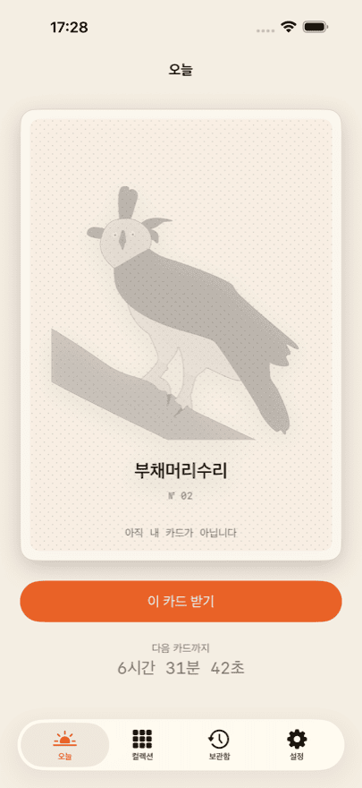
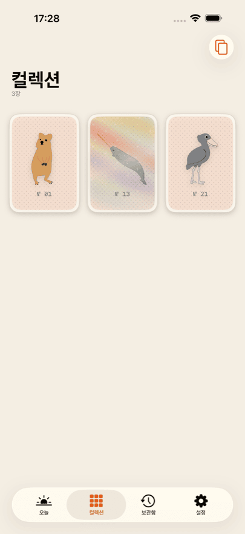
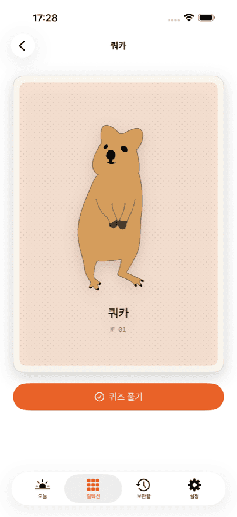
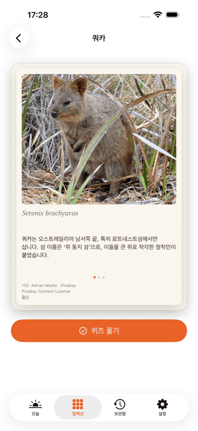
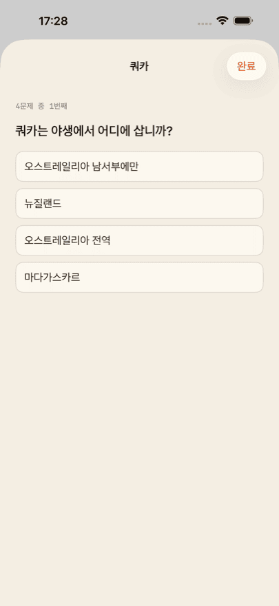

iPhone용 앱
Daily Bestiary
모으는 재미, 희귀 동물 카드
매일 손으로 그린 새 동물 카드가 기다립니다. 잠금을 풀면 그 카드는 당신의 것입니다. 뒤집으면 사진, 세 가지 사실, 학명, 그리고 네 문제짜리 퀴즈가 있습니다.
처음 세 장은 무료입니다. 그중 한 장은 홀로 카드입니다. 기기를 기울이면 빛이 카드 위를 흐릅니다.
Daily Bestiary는 곧 App Store에 출시됩니다. 출시되면 이 버튼에서 바로 앱 페이지로 이동합니다.
이런 것들이 있습니다
-
하루에 한 장
한 장, 그 이상은 없습니다. 오늘의 카드는 달력 날짜가 아니라 당신이 시작한 날을 기준으로 정해집니다. 언제 시작해도 괜찮습니다.
-
사진과 세 가지 사실
모든 뒷면에 그 동물의 실제 사진, 세 가지 사실, 학명이 담겨 있습니다.
-
동물마다 퀴즈
동물 한 종에 네 문제. 생물 교사가 내용을 검토했습니다. 언제든 다시 풀 수 있습니다.
-
함께 자라는 컬렉션
앨범에는 당신의 카드만 보입니다. 빈칸도, ‘몇 장 중 몇 장’도, 경쟁도 없습니다.
-
홀로 카드
빛나는 카드가 있습니다. 기기를 기울이면 빛이 표면을 따라 흐릅니다.
이렇게 생겼습니다





Collector
Collector를 쓰면 아카이브가 열립니다. 놓친 날의 카드도 나중에 가져올 수 있습니다. 오늘의 카드도 매일 포함되고, 컬렉션 전체의 퀴즈 통계도 볼 수 있습니다.
Collector는 구독이며 해지할 때까지 자동으로 갱신됩니다. 해지는 Apple 계정 설정에서 언제든 가능합니다. 현재 가격과 기간은 국가마다 다르므로 App Store에서 확인해 주세요.
사진 출처
카드 앞면의 그림은 손으로 그렸습니다. 뒷면의 사진은 Pixabay, Unsplash, Wikimedia Commons 같은 자유 이용 출처에서 가져왔습니다.
모든 사진은 촬영자, 라이선스, 출처 링크와 함께 해당 카드의 뒷면에 표시됩니다. 작은 글씨 속이 아니라, 사진이 있는 바로 그 자리에.
자주 묻는 질문
Daily Bestiary는 얼마인가요?
다운로드는 무료이고 처음 세 장은 무료로 드립니다. 뒷면과 사실, 퀴즈까지 모두 그대로 즐길 수 있습니다. 그다음에는 오늘의 카드를 한 장씩 열거나, 10장 팩을 구매하거나, Collector를 구독합니다. 현재 가격은 App Store에 표시되며 국가마다 다릅니다.
계정이 필요한가요?
아니요. 가입도, 로그인도, 프로필도 없습니다. 앱은 이름도 이메일 주소도 묻지 않습니다.
카드는 모두 몇 장인가요?
어디에도 적어 두지 않았습니다. 앱에도, 이 페이지에도 없습니다. 총 개수를 밝히면 수집이 진행률 표시가 되어 버립니다. 그건 바라는 바가 아닙니다. 존재하는 카드를 모두 모으면 앱이 알려 드립니다.
하루를 놓치면 어떻게 되나요?
그 카드는 사라지지 않습니다. Collector를 쓰면 아카이브가 열려 놓친 날을 가져올 수 있습니다. Collector가 없다면 다음 날 다음 카드가 이어집니다.
iPhone과 iPad 사이에서 동기화되나요?
네, 두 기기가 같은 Apple 계정으로 iCloud에 로그인되어 있다면 동기화됩니다. 동기화는 본인의 비공개 iCloud 데이터베이스를 거치며, 개발자는 그 안을 볼 수 없습니다.
앱을 다시 설치했는데 구매가 사라졌나요?
아닙니다. 앱 설정과 모든 구매 화면에 ‘구매 복원’이 있습니다. 이것으로 구독과 남은 크레딧이 Apple 계정에 다시 연결됩니다. 컬렉션 자체는 iCloud에서 돌아옵니다.
Collector는 어떻게 해지하나요?
앱이 아니라 Apple에서 합니다. 설정 → 사용자 이름 → 구독. 언제든 해지할 수 있고, 현재 기간이 끝날 때 적용됩니다. 앱 설정의 Customer Center에서도 같은 경로로 이동합니다.
인터넷 없이도 쓸 수 있나요?
네. 모든 카드와 사진, 퀴즈 문제가 앱 안에 들어 있어 내려받지 않습니다. 연결이 필요한 것은 구매와 iCloud 동기화뿐입니다.